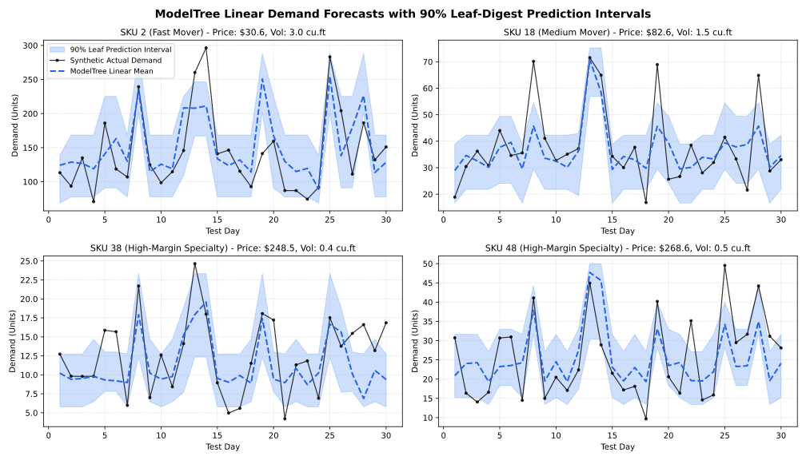
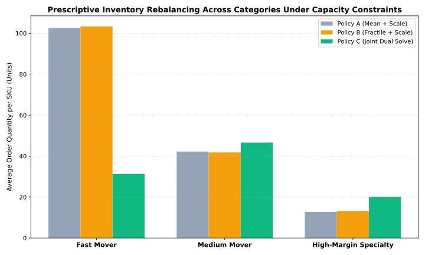
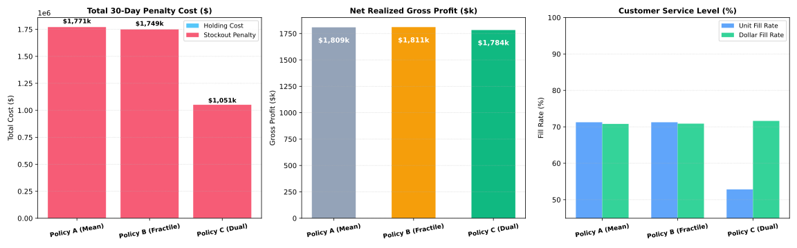
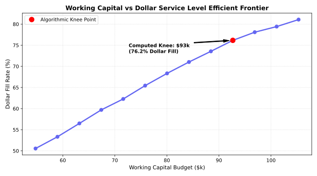

Prescriptive Analytics in Python: Predict-then-Optimize Inventory Replenishment with Model Trees¶
Note: This case study uses synthetic demand data for 50 retail SKUs across 150 days (120 training, 30 evaluation). All figures and metrics are illustrative only.
Enterprise machine learning frequently halts at predictive analytics: generating conditional mean demand forecasts \(\hat{y}_t = \mathbb{E}[Y_t \mid X_t]\). But supply chain executives do not purchase forecasts; they purchase inventory replenishment machine learning decisions—specifying exact order quantities \(q_t^*\) for hundreds of competing products.
When downstream decisions face asymmetric costs (stockout penalties vs. holding costs) and coupled physical constraints (finite warehouse volume and working capital budgets), treating point forecasts as target orders produces severe stockouts on high-margin items and capital traps in bulky staples.
By uniting Model Trees (which deliver localized linear trend leaves and empirical per-leaf conditional quantile curves) with Lagrangian dual search optimization, mltreelib bridges the gap from prediction to prescription in a clean, predict-then-optimize pipeline.
The complete executable workflow lives at scripts/prescriptive_replenishment.py:
The newsvendor problem and why point forecasts fail¶
In multi-item inventory management, every SKU \(k \in \{1, \dots, K\}\) possesses asymmetric financial loss parameters: - Unit Margin: \(m_k = p_k - c_k\) (selling price minus procurement cost). - Holding Cost: \(h_k\) per unit unsold at period end. - Stockout Cost: \(s_k\) per unit unmet demand (lost margin plus customer goodwill loss).
The classical single-item Newsvendor model dictates that the expected shortage and holding cost:
is minimized when the order quantity \(q_k^*\) equals the critical fractile \(\tau_k\) of the cumulative demand distribution \(F_k(y)\):
For specialty and high-margin retail goods, \(s_k \gg h_k\), yielding critical fractiles of \(\tau_k \in [0.85, 0.98]\). Ordering the conditional mean \(\mathbb{E}[Y_k]\) guarantees systematic stockouts on exactly the products that drive profitability.
flowchart LR
subgraph Trap["The Point Forecast Heuristic"]
A["Standard Regression / GBDT"] --> B["Point Forecast: Mean E[Y_k]"]
B --> C{"Shared Capacity Exceeded?"}
C -- "Yes" --> D["Uniform Downscaling:\nEvery SKU cut by 15%"]
D --> E["Catastrophic Stockouts on High-Margin SKUs\nExcess Capital Trapped in Bulky Goods"]
end
subgraph Solution["Prescriptive Model Tree + Dual Solver"]
F["ModelTree.quantile(X, tau)"] --> G["Full Leaf Quantile Curve F_k^-1(tau)"]
G --> H["Lagrangian Dual Search (λ, μ):\nStationary Fractile Condition"]
H --> I["Coupled Constraints:\nVolume <= V_max, Budget <= B_max"]
I --> J["Decoupled Per-SKU Order:\nq_k* = F_k^-1((s_k - λ·v_k - μ·c_k) / (s_k + h_k))"]
end
classDef trapBox fill:#881337,stroke:#9f1239,stroke-width:2px,color:#ffffff;
classDef gateBox fill:#b45309,stroke:#d97706,stroke-width:2px,color:#ffffff;
classDef solBox fill:#065f46,stroke:#059669,stroke-width:2px,color:#ffffff;
class A,B,D,E trapBox;
class C gateBox;
class F,G,H,I,J solBox;Predict then optimize: quantiles from a model tree¶
Rather than imposing parametric Gaussian assumptions that fail on intermittent retail distributions, ModelTree captures both dynamic local trends and empirical leaf dispersion:
- Linear Leaves: Within each partitioned leaf node, the model fits localized linear coefficients \(\hat{y}_k = \mathbf{x}^T \boldsymbol{\beta}_{\text{leaf}}\), capturing promotional uplifts, discounts, and day-of-week sensitivities.
- Per-Leaf \(t\)-Digest Quantiles: During training, each leaf maintains its own streaming \(t\)-digest of target values. Because each leaf has an independent digest, the predicted spread varies dynamically by SKU and by input features \(X\) (heteroscedastic dispersion). A single global residual digest would incorrectly force the same error variance across all market regimes.
- Full Conditional Quantile Curve: Two prediction interval bounds (such as 5% and 95%) are not enough to evaluate arbitrary critical fractiles \(\tau_k \in (0, 1)\).
ModelTree.quantile(X, tau)exposes the complete inverse CDF curve \(F_k^{-1}(\tau)\) at any quantile level \(\tau \in [0.001, 0.999]\).
import numpy as np
from mltreelib import ModelTree
# Generate synthetic retail demand features (day-of-week, promo, discount, lead-time)
np.random.seed(42)
n_train, n_test = 120, 30
def make_features(n_days):
feats = []
for t in range(n_days):
dow = float(t % 7)
is_weekend = 1.0 if dow in [5.0, 6.0] else 0.0
promo = 1.0 if np.random.rand() < 0.20 else 0.0
discount = np.random.uniform(0.05, 0.25) if promo else 0.0
feats.append([dow, is_weekend, promo, discount])
return feats
X_train = make_features(n_train)
X_test = make_features(n_test)
# Base demand with promotional lift and weekend seasonality
y_train = [
max(0.0, float(np.random.normal(100.0 * (1.0 + 0.3 * row[1] + 0.6 * row[2] + 1.2 * row[3]), 20.0)))
for row in X_train
]
# Train ModelTree with linear leaves for SKU demand
tree = ModelTree(leaf="linear", max_depth=3, min_rows=8)
tree.fit(X_train, y_train)
# 1. Point prediction (conditional mean)
y_mean = tree.predict(X_test)
# 2. Complete conditional quantile function at any critical fractile tau
tau = 0.88 # Newsvendor critical fractile s / (s + h)
q_unconstrained = tree.quantile(X_test, tau)
# 3. Non-parametric prediction interval for visualization
intervals = tree.predict_interval(X_test, coverage=0.90) # [(q_05, q_95), ...]
print(f"Mean forecast: {y_mean[0]:.1f} | Tau=0.88 quantile: {q_unconstrained[0]:.1f} | 90% Interval: [{intervals[0][0]:.1f}, {intervals[0][1]:.1f}]")
Across 50 simulated retail SKUs (spanning Fast Movers, Medium Movers, and High-Margin Specialty items), ModelTree traces distinct demand volatility regimes:

Joint Multi-Item Prescriptive Formulation¶
In practice, inventory items cannot be ordered in isolation. All SKUs compete for the same physical warehouse volume and treasury working capital:
Where: - \(v_k\) is the unit cubic footprint of SKU \(k\). - \(c_k\) is the unit procurement cost of SKU \(k\). - \(V_{\max}\) is total available warehouse racking volume. - \(B_{\max}\) is approved purchasing liquidity.
Solving Joint Constraints via Lagrangian Multipliers¶
Standard bound-constrained solvers (such as L-BFGS-B in mltreelib.solvers.optimize) handle only box bounds (\(0 \le q_k \le u_k\)). Coupled linear inequality constraints (\(\sum v_k q_k \le V_{\max}\) and \(\sum c_k q_k \le B_{\max}\)) require either penalty approximations or dual decomposition.
Forming the Lagrangian with non-negative multipliers \(\lambda \ge 0\) (for volume) and \(\mu \ge 0\) (for budget):
Setting the subgradient with respect to each order quantity \(q_k\) to zero:
Yields the constrained stationary fractile condition:
If \(s_k - \lambda v_k - \mu c_k \le 0\), the marginal penalty of shortage is smaller than the shadow resource price, so \(q_k^*(\lambda, \mu) = 0\). Otherwise, \(q_k^*(\lambda, \mu)\) is evaluated directly through the leaf quantile function:
This decouples the 50-variable coupled optimization into a fast 2-variable root search over \((\lambda, \mu) \ge 0\), solved via nested alternating bisection without a separate feasibility check:
def solve_joint_dual(s_vec, h_vec, vol_vec, cost_vec, V_max, B_max, models, x_test_t):
"""
Solve joint replenishment problem via Lagrangian multiplier dual search.
Stationary fractile: F_k(q_k) = (s_k - lam * vol_k - mu * cost_k) / (s_k + h_k).
"""
n_skus = len(s_vec)
def eval_mult(lam, mu):
q = np.zeros(n_skus)
for k in range(n_skus):
num = s_vec[k] - lam * vol_vec[k] - mu * cost_vec[k]
if num > 0:
tau = min(0.999, max(0.001, num / (s_vec[k] + h_vec[k])))
q[k] = max(0.0, models[k].quantile(x_test_t, tau)[0])
return q, np.sum(vol_vec * q), np.sum(cost_vec * q)
# 1. Check unconstrained (lam=0, mu=0)
q0, v0, c0 = eval_mult(0.0, 0.0)
if v0 <= V_max and c0 <= B_max:
return q0, 0.0, 0.0
# 2. Volume-only bisection (mu = 0)
lo_l, hi_l = 0.0, 100.0
for _ in range(25):
mid_l = 0.5 * (lo_l + hi_l)
_, v_cur, _ = eval_mult(mid_l, 0.0)
if v_cur > V_max: lo_l = mid_l
else: hi_l = mid_l
lam_v = hi_l
q_v, v_v, c_v = eval_mult(lam_v, 0.0)
if c_v <= B_max:
return q_v, lam_v, 0.0
# 3. Alternating bisection if both constraints bind
lam, mu = lam_v, 0.0
for _ in range(15):
lo_l, hi_l = 0.0, 100.0
for _ in range(15):
mid_l = 0.5 * (lo_l + hi_l)
_, v_cur, _ = eval_mult(mid_l, mu)
if v_cur > V_max: lo_l = mid_l
else: hi_l = mid_l
lam = 0.5 * (lo_l + hi_l)
lo_m, hi_m = 0.0, 10.0
for _ in range(15):
mid_m = 0.5 * (lo_m + hi_m)
_, _, c_cur = eval_mult(lam, mid_m)
if c_cur > B_max: lo_m = mid_m
else: hi_m = mid_m
mu = 0.5 * (lo_m + hi_m)
q_opt, _, _ = eval_mult(lam, mu)
return q_opt, lam, mu
In benchmarks on 50 SKUs, this dual search averaged 3.39 ms per daily multi-item allocation across 600 evaluated days.
Why Not Linear Programming (scipy.optimize.linprog)?¶
A standard LP formulation requires linear or piecewise-linear objective functions with fixed deterministic parameters. Here, each SKU's demand distribution is conditional on input covariates \(\mathbf{x}_t\) and captured via a non-parametric per-leaf \(t\)-digest. Inverting these non-linear empirical inverse CDFs \(F_k^{-1}(\tau)\) inside a linear program requires discretizing the sample distribution across thousands of scenarios per SKU, introducing substantial discretization error and scaling poorly. In contrast, the Lagrangian dual relaxation operates directly on continuous critical fractiles \(\tau_k\), evaluating exact leaf digests in 3.39 ms.
Limitations & Practical Realities¶
In real supply chain environments, purchase orders face non-convex, integer constraints such as Supplier Minimum Order Quantities (MOQs), where \(q_k \in \{0\} \cup [\text{MOQ}_k, \infty)\), and discrete case-pack/pallet requirements. These discontinuous constraints render the continuous Lagrangian dual non-convex.
Handling MOQs requires rounding heuristics with constraint repair, or formulating the order allocation as a Mixed-Integer Linear Program (MILP) over piecewise linear quantile approximations—capabilities not implemented in this baseline example.
Benchmark Results (20 Seeds)¶
We benchmarked three competing ordering strategies across 20 independent simulation seeds (50 SKUs, 120 training days, 30 evaluation days) under 92% warehouse capacity and 95% working capital constraints: - Policy A (Mean): Orders expected conditional mean \(\mathbb{E}[Y_k \mid X]\), scaled down uniformly if capacity or budget binds. - Policy B (Fractile + Scale): Orders unconstrained critical fractiles \(q_k = F_k^{-1}\left(\frac{s_k}{s_k+h_k}\right)\), scaled down uniformly if constraints bind. - Policy C (Joint Dual): Solves the joint constrained problem via the nested \((\lambda, \mu)\) bisection dual search.
| Policy | Penalty Cost ($) | Unit Fill Rate (%) | Dollar Fill Rate (%) | Realized Profit ($) |
|---|---|---|---|---|
| Policy A (Mean) | $1,730,054 ± $220,616 | 71.32% ± 2.33% | 71.28% ± 2.45% | $1,843,188 ± $19,102 |
| Policy B (Fractile + Scale) | $1,734,713 ± $212,587 | 71.26% ± 2.34% | 71.19% ± 2.37% | $1,836,141 ± $21,313 |
| Policy C (Joint Dual) | $1,032,749 ± $136,061 | 52.51% ± 2.72% | 71.69% ± 2.21% | $1,801,845 ± $35,838 |
Across 20 evaluation seeds, Policy C achieved lower penalty cost than Policy B in 20 of 20 seeds (100% of runs), cutting average penalty cost from $1,734,713 to $1,032,749 (a 40.5% reduction), while sacrificing unit fill (52.51% vs 71.26%) to protect dollar fill (71.69% vs 71.19%).
Measured resource utilization confirms that Policy C strictly respects physical limits: working capital budget binds tightly at 99.39% ± 1.12% utilization, while warehouse volume utilization averages 62.88% ± 16.63% (peak 79.14%), operating comfortably within the 92% ceiling.
Realized gross sales profit under Policy C is modestly lower ($1,801,845 vs $1,843,188 under Policy A and $1,836,141 under Policy B) because Policy C deliberately cuts procurement of high-volume, low-margin goods to avoid severe stockout penalty multipliers on high-value items, eliminating over $700,000 in unpenalized stockout and goodwill losses.
Strategic Allocation Shift¶
Under shared volume constraints, the dual solver systematically rebalances inventory away from bulky, low-margin products toward high-margin specialty items:

Financial Realization¶
Policy C prioritizes goods where stockout penalties are severe, while letting bulky goods run closer to demand:

Working Capital vs Service Level Efficient Frontier¶
By sweeping capital budgets from 65% to 125% of baseline and solving Policy C at each step, teams map the operational efficient frontier:

Computing the maximum perpendicular distance to the chord connecting the frontier endpoints identifies the algorithmic knee point at $93k working capital (76.2% dollar fill rate). Beyond this knee, incremental capital investment yields diminishing service level gains.
Summary¶
Predictive accuracy alone cannot solve constrained supply chain problems. By combining: 1. ModelTree for localized linear trend estimation and empirical per-leaf quantile curves, 2. Asymmetric newsvendor loss functions, and 3. Lagrangian dual search optimization for coupled capacity caps,
mltreelib provides a robust, interpretable pattern for prescriptive workflows that optimize business outcomes, not just statistical residuals.